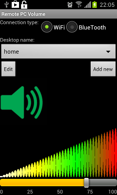
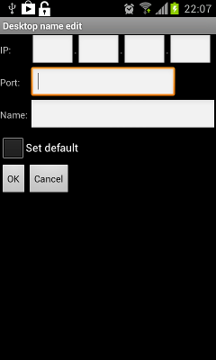
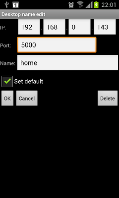
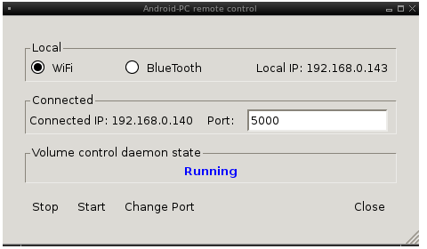
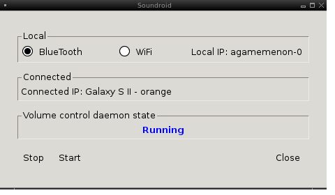

The project consists of two parts:
- Android application
- Desktop daemon
Android application:
The main activity, the activity for adding a new desktop data, the activity for editing a selected desktop data:
  
The desktop daemon controls the sound volume, receives and sends commands to the Android application.
Installation:
IMPORTANT: The port number 7 used by Echo Protocol should be opened in your firewall.
The port and the protocol are used by the Android application for checking the desktop's IP is reachable.
- Without building from source:
1.Unpack the downloaded archive
2.Copy the libraries *.so from the local lib directory to the directory /usr/lib (at 64-bit platforms sometimes used /lib64)
3.Run the daemon:
- Go to the local directory build
- For connecting by Wifi, run the daemon with the parameter wifi and the port number, e.g. ./vol_daemon wifi 5000
For connecting by BlueTooth, run the daemon with the parameter bt, e.g. ./vol_daemon bt
To stop the daemon, run the script stop.sh
To change the port for connecting by Wifi, stop the daemon and start it with another port or use the GUI program
4.Install the Android application
For connecting by Wifi from the application:
- Click 'Add new' and add your controlled desktop by its IP and the used port number(see 3.)
For connecting by Bluetooth from the application(the desktop and used Android device should be paired by Bluetooth before):
- Select your desktop name from the drop list of desktops in the Application
- With building from source:
see the INSTALL file in the downloaded archive
Controlling the desktop daemon by GUI program:
The program should be run in the same directory with the daemon program

Connected IP is the IP of the connected Android device.
Port is the port number for connecting daemon and the Android device.

IMPORTANT:
For Wifi connection: the used port should be opened in your firewall
For Bluetooth connection: the desktop and the Android device should be paired by Bluetooth
Source code documentation:
- Android application
- Desktop daemon
Tested on distributions:
- Ubuntu
- Fedora
- Debian